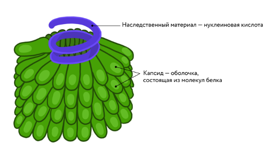
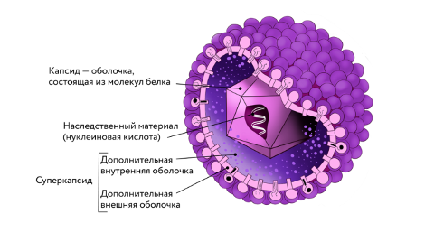
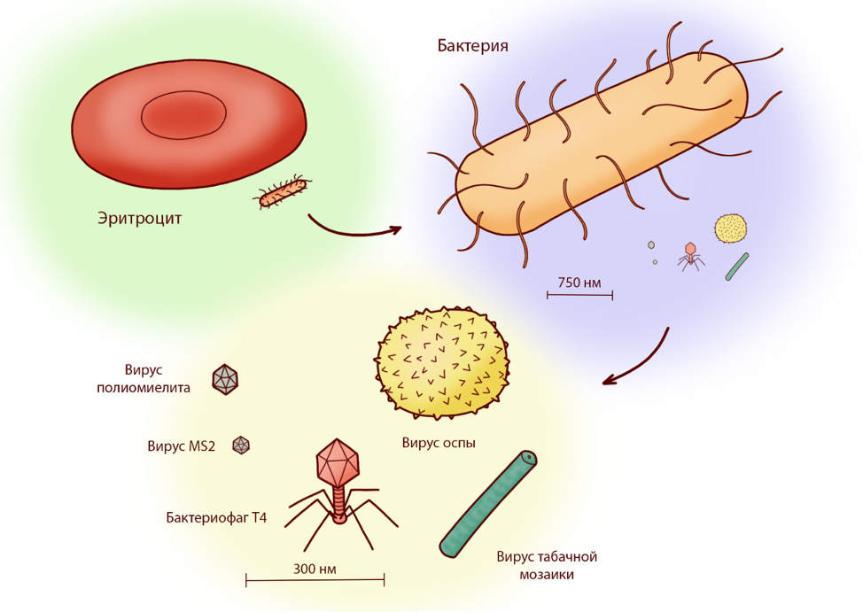
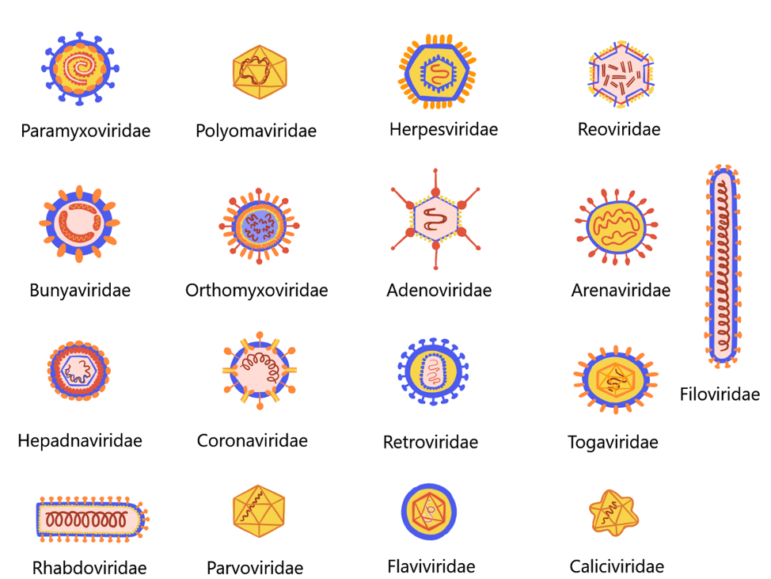
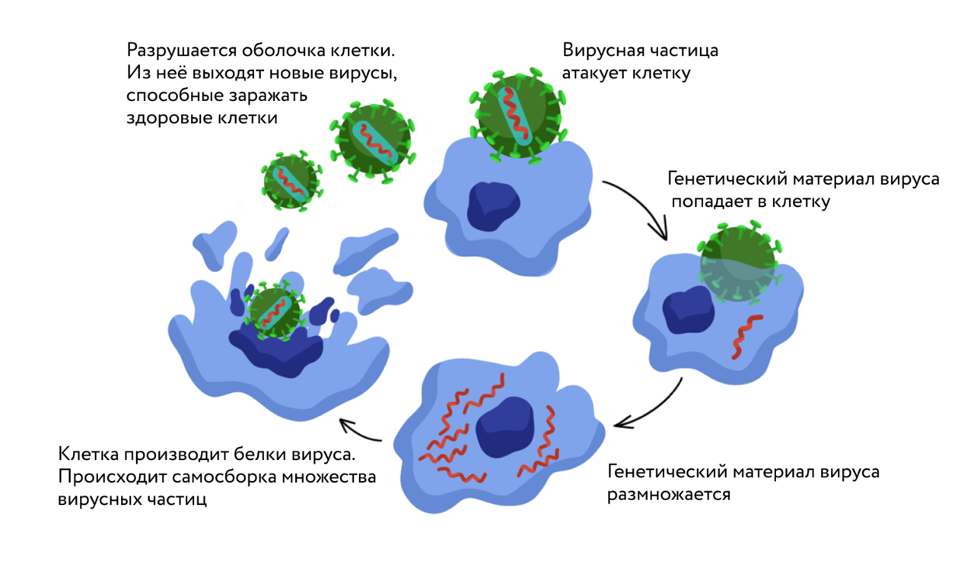
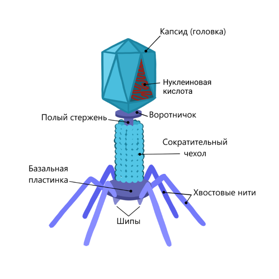
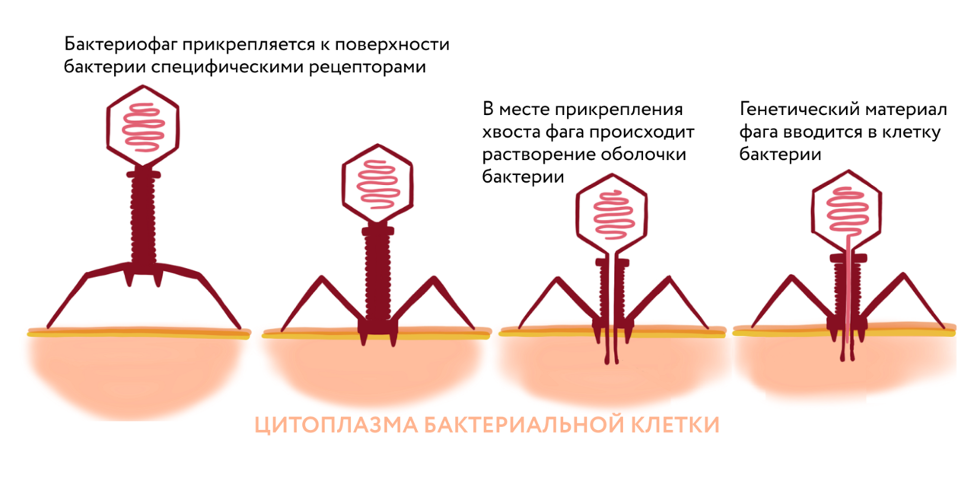

Строение вирусов
Вирусы не имеют клеточного строения
Самые просто устроенные вирусные частицы — вирионы — представляют собой молекулы наследственного
материала, заключённые в белковую оболочку
Наследственный материал — это молекулы нуклеиновых кислот, в структуре которых содержится информация о
строении вирусной частицы.
Оболочку вируса, построенную из белковых молекул, называют капсидом
(от лат. capsa [ка́пса] — «футляр»).

Некоторые вирусы устроены сложнее: поверх капсида у них есть дополнительная оболочка — суперкапсид
(от лат. super [су́пер] —
«над, выше»). Но и такие вирусы не имеют клеточного строения.

Вирусные частицы очень малы
Размеры вирусных частиц настолько малы, что их можно увидеть только с помощью электронного микроскопа.
Вирусы мельче бактериальных клеток в 10–100 раз.

Вирусы очень разнообразны по форме
Вирусные частицы имеют разнообразную форму: округлую, вытянутую, палочковидную или даже форму кристалла.
Некоторые вирусы имеют белковые хвостовые нити, поверхность других покрыта шипами или выростами сложной формы.

Особенности существования вирусов
Все вирусы — паразиты
Вирусы — паразиты живых организмов, так как не способны размножаться вне их клеток. Вне клетки
организма-хозяина вирусные частицы не проявляют свойств живого и ведут себя как химические вещества.
Попав в клетку, генетический материал вируса начинает воспроизводиться и многократно умножается.
Используя генетическую информацию вируса, клетка за счёт собственных ресурсов производит вирусные белки.
Таким образом, заражённая клетка превращается в фабрику по производству компонентов вирусных частиц.
Из образовавшихся молекул внутри клетки собираются новые вирионы. Затем они разрушают оболочку клетки и
после выхода наружу способны заражать соседние клетки.

Вирусы поражают клетки организмов из всех царств. Существуют вирусы, размножающиеся в клетках растений,
грибов и животных, в том числе человека. К вирусным заболеваниям человека относят грипп, ветрянку, свинку,
корь, гепатит, СПИД, коронавирусную инфекцию (COVID-19) и многие другие.
Известны также вирусы, поражающие бактериальные клетки; их называют бактериофагами (от др.-греч. bakterion
[бактэ́рион] — «палочка» и phagos [фа́гос] — «пожиратель») или просто фагами.


Вирусы похожи на живые организмы тем, что имеют в составе белковые молекулы и генетический материал
(нуклеиновую кислоту) и способны размножаться, создавая собственные копии.
Вирусы отличаются от других живых организмов тем, что они лишены клеточного строения и не имеют
собственного обмена веществ — для размножения им необходима клетка-хозяин.
Выводы:
׃Вирусы — это мельчайшие внутриклеточные паразиты, вызывающие заболевания растений и животных. Грипп, корь,
свинка (паротит), краснуха, бешенство, гепатит, клещевой энцефалит, коронавирусная инфекция —
эти заболевания человека вызываются вирусами.
׃Вирион — вирусная частица, находящаяся вне клетки, она не проявляет признаков живого и состоит из
наследственного материала (нуклеиновой кислоты), окружённого белковой оболочкой — капсидом.
׃Вирусы представляют собой микроскопические частицы, способные заражать живые организмы.
Они не имеют клеточного строения и состоят из наследственного материала, заключённого в белковую оболочку.
׃Размеры вирусов настолько малы, что их можно увидеть только с помощью электронного микроскопа.
Они мельче бактериальных клеток в 10–100 раз.
׃Вирусы имеют разнообразную форму, включая округлую, вытянутую, палочковидную и другие.
Некоторые вирусы обладают дополнительной оболочкой.
׃Все вирусы являются паразитами живых организмов, так как не могут размножаться вне их клеток.
Попав в клетку, генетический материал вируса начинает воспроизводиться и приводит к заражению соседних клеток.
׃Вирусы похожи на живые организмы тем, что имеют белковые молекулы и генетический материал,
способны размножаться и создавать копии себя. Однако они отличаются от других живых организмов тем,
что лишены клеточного строения и не имеют собственного обмена веществ.